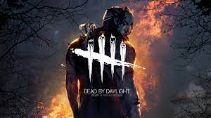

Little nightmares is a dark whimsical tale that will confront you with your childhood fears! Help Six escape The Maw – a vast, mysterious vessel inhabited by corrupted souls looking for their next meal. The game is filled with suspense, tht will leave you holding your breath as you sneak past enemies trying to capture you. The story will captivate you so much you need to keep playing to reveal more secrets to the mysterious place that you are navigating through, and the story doesn't end with the core gameplay as DLC content gives even more insight into the happenings within the game.
The Forest
The forest is an action-packed survival, horror story-based game, it can be played both in single-player mode where you can fully experience the story or in multiplayer mode with 3 friends where you can choose to play through the story or just fortify a base and survive against the increasingly difficult enemies as the days go by. In the story mode, you play as a man who is searching for his son after the plane they are travelling on crash lands on an island in the middle of nowhere. The father regains consciousness as a strange figure carries his son away, only to fall unconscious again as the figure disappears with his son, he later awakens and begins his search for his son while trying to survive on the island, by hunting to sustain himself and fighting against cannibals that are constantly trying to kill him.
Dead By Daylight

Dead By Daylight is an asymmetrical multiplayer online horror game with a suprising amount of story and lore behind it, however, you have to dig for it and complete tasks in order to unlock some of the deeper parts. While playing the game itself you don’t get the story in any way other than via the environment, depending on which area you spawn in as this can change depending on a variety of factors, such as the killer you are playing as or against and the totem items that the players can choose to play in order to change the area or other variables within the game.
The game consists of 5 players max, 4 of which are survivors who are tasked with getting generators running in order to escape from the level. The remaining player is the killer, whose task is to hunt down all of the survivors and sacrifice them to the entity before they have a chance to escape. Both survivors and killers come in a variety of characters, all of which come with different perks and skill sets that can give the player small advantages